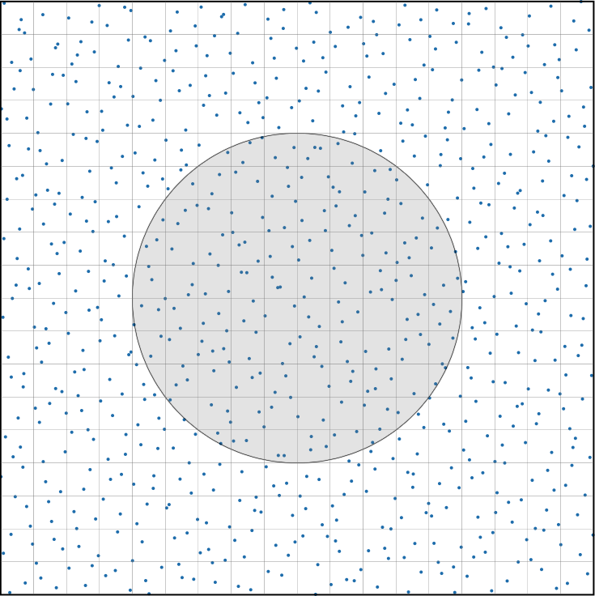
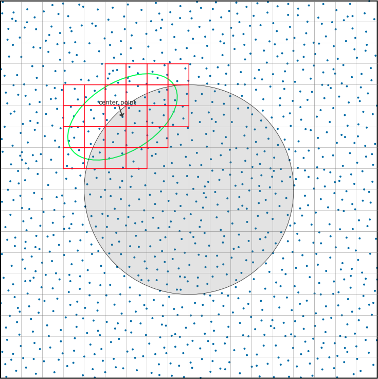
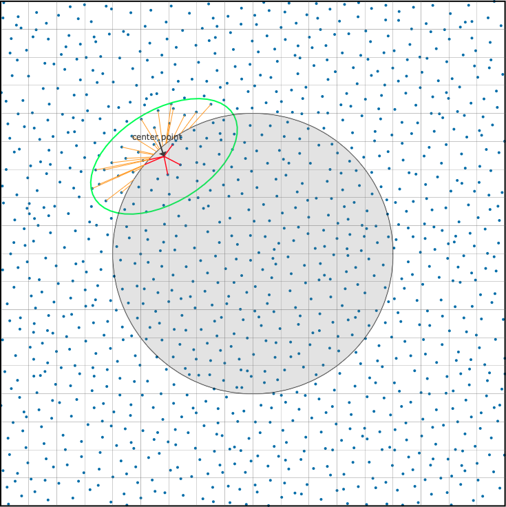

Back to Top
STEP 1: Generation
STEP 2: Assignment
STEP 3: Solving
Numercial Result
Slides
Poster
STEP 1: Generation
Generate Proper Point Cloud
1. Initialize Point Cloud

Domain
: the gray area
Extended domain
: the whole area
Interior point
: points that are inside the domain
Boundary point
: points that are outside the domain
Voxel
: small blocks that divide the extended domain
2. Adjust Point Cloud
Interactive Example (CLICK ME)
STEP 2: Assignment
Assign Matrix A to Proper Point Cloud
1. Find Neighbors via Voxel
Interactive Example (CLICK ME) 
2. Select MPS via Minimization Problem
Interactive Example (CLICK ME) 
STEP 3: Solving
Solve Equation Using Assembled Matrix
Example 1
Example 2
Numerical Results
Large screen devices are recommended
Graphs are supposed to fit the screen width
Refresh if graphs are not displayed correctly